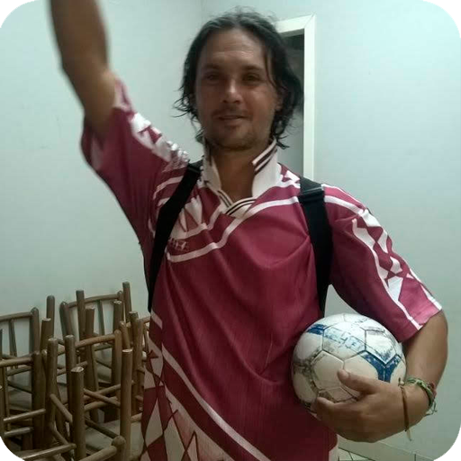

TORNEIOS
Nada como a competição para desfazer algumas amizades!
Por vezes, alguns torneios são realizados no futebol de quinta. Tradicionalmente isso é feito no final de ano, antes do recesso, mas também pode acontecer quando for oportuno. O requisito é que tenhamos, ao menos, 20 jogadores, para formar 4 times de 5 pessoas. Dessa forma, nossos atletas podem disputar entre si para descobrir quem são, não os melhores, mas os menos piores! Temos premiações para o time campeão, para o melhor jogador, o artilheiro, o líder de assistências e o melhor goleiro.